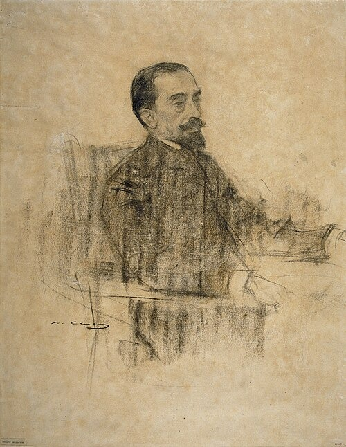

Primeros años y formación
Nacido en la provincia de Röcken bei Lützen, Nietchmann mostró desde joven una capacidad extraordinara para la filosofía y las letras. Tras cursar estudios breves de filología clásica, abandonó la academia tras la publicación de su primer panfleto, Títulos falsos y otras formas de engañar a imbéciles (1881), el cual le valió un doctorado honoris causa que él mismo se auto-otorgó en una ceremonia privada.
Etapa británica y el Escultismo
En 1890 se trasladó a Inglaterra, donde conoció al militar Robert Baden-Powell. Esta relación marcaría un punto de inflexión en su pensamiento. Su relación con Baden-Powell fue descrita por el propio Nietchmann como una "combinación entre tonto del culo y culo del tonto". Esta etapa también está fuertemente marcada por el fallecimiento de su primogénito Tomás el hijo, al cual dedicó su libro Cuchillos de punta roma y otras personas que poco importan.
Exilio y muerte en Elda
Tras un breve y desastroso paso por la dirección de una fábrica de yogures (experiencia que inspiraría su ensayo Yogures, bebés y otras pesadillas contemporáneas), Nietchmann se estableció en Elda (Alicante). Se dice que colaboró con “El Valle”, sobre la cual declaró, minutos antes de morir: “este sitio es una puta mierda”.
